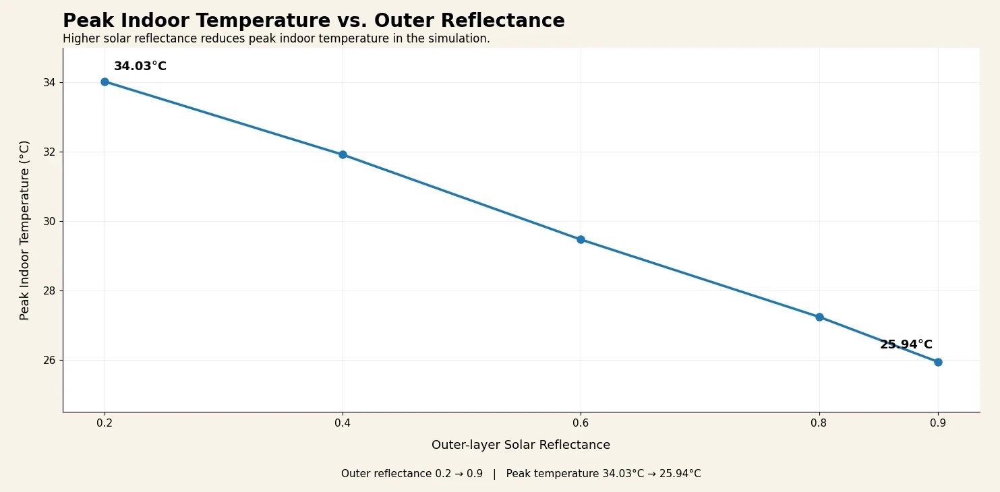
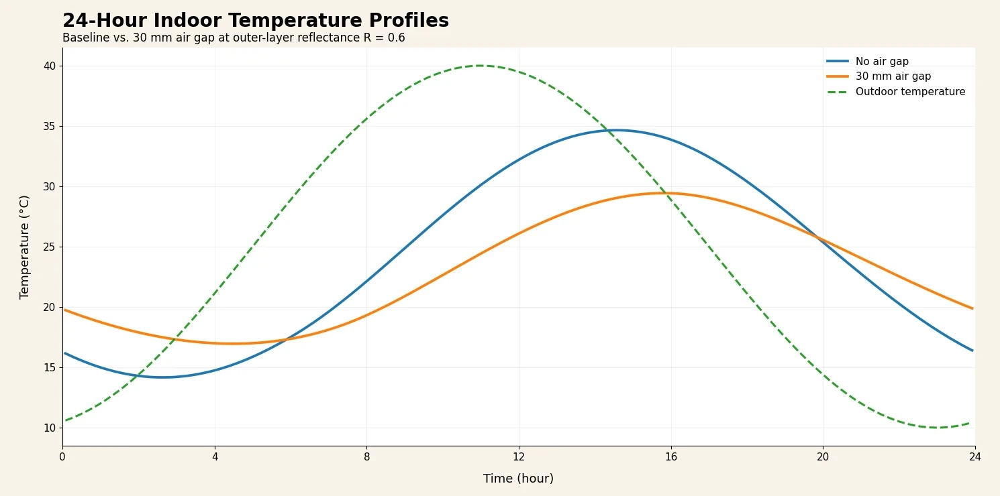

Research
From practical design to deeper research.
01 / From Problems to Designs
Thinking of another way—and trying it.
The more time I spend outdoors, the more I notice the little things.
A center pole that always seems to be in the way.
Tired arms from holding a phone above my face in a hammock. Mosquitoes turning a comfortable hammock bed into somewhere nobody wants to sleep.
Or my sister asking for something that doesn’t quite exist yet.
Little things like these often get me thinking. Sometimes I find a quick fix; other times I start sketching, looking at existing solutions, and making something of my own. Some ideas stay small, while others keep changing as I use them outdoors.
I don’t document everything I make, but here are a few ideas I happened to capture along the way.
Explore the product designs02 / From Design to Research
Passive Thermal Regulation in Lightweight Tents
The Question
Lightweight tents are great for portability, but their thin fabrics provide little insulation: they can heat up quickly in the sun and lose heat just as quickly at night. This made me wonder: could the structure of the tent itself help stabilize its temperature without electricity or active cooling?
The Approach
I explored a three-layer passive structure combining a reflective outer layer, an air gap, and a breathable inner layer. Using a Python-based thermal model, I simulated the tent’s temperature over a 24-hour cycle and tested how solar reflectance and the air gap affected peak temperature and daily temperature swing.

Key Finding
In the simulation, increasing outer-layer solar reflectance from 0.2 to 0.9 reduced peak indoor temperature from 34.0°C to 25.9°C and narrowed the daily temperature swing from 15.8°C to 10.2°C. The 30 mm air gap produced a much smaller improvement, suggesting that solar reflectance was the more influential parameter under the tested conditions.

Note: This is a preliminary numerical study using synthetic weather data; physical prototype testing would be the next step.
03 / Research
Materials Database
Images, diagrams, or video will appear here.
About this project
Details forthcoming.
Project structure
- Problem
- To be added.
- My role
- To be added.
- Build / Method
- To be added.
- Evidence
- To be added.
- Result
- To be added.
- Iteration
- To be added.
04 / Research
AI Micro-expression Project
Images, diagrams, or video will appear here.
About this project
Details forthcoming.
Project structure
- Problem
- To be added.
- My role
- To be added.
- Build / Method
- To be added.
- Evidence
- To be added.
- Result
- To be added.
- Iteration
- To be added.